数据校验和防碰撞算法
[!note]
外界的各种干扰可能使数据传输产生错误：
外界噪声, 传输中码间串扰
方法：运用数据检验（差错检测）
多个电子标签同时占用信道使发送数据产生碰撞
方法：防碰撞算法:多路存取法 。
差错的性质和表示方法
- 随机错误：由信道中的随机噪声干扰引起。在出现这种错误时，前后位之间的错误彼此无关。
- 突发错误： 由突发干扰引起，当前面出现错误时，后面往往也会出现错误，它们之间有相关性。
- 混合错误 ：既有单个错误，也存在关联性错误
差错控制方式
- 前向纠错（FEC）
发送端发出的码字具有纠错能力的；
接收端译码后不仅可以发现错误码，而且可以判断错误码的位置并予以自动纠正。
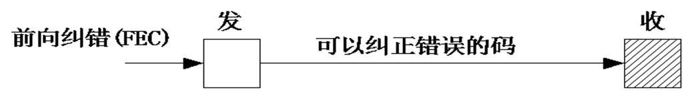
- 检错重发（ARQ)
少量的冗余码，就可以得到极低的输出误码率，并且有一定的自适应能力
但是需要反向信道传输应答信号
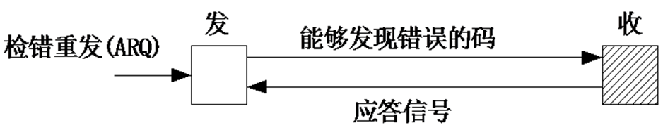
- 混合纠错检错（HEC）
前向纠错方式和检错重发方式的结合
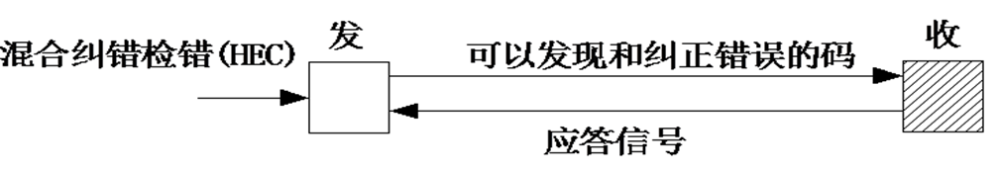
检纠错码
信息码元和监督码元
总码元数n=k+r
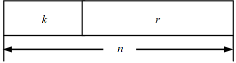
分类：
- 卷积码：监督码元不仅与本码组的信息码元相关，而且与本码组相邻的前m个时刻输入的码组的信息码元之间也具有约束关系，性能优于分组码
- 分组码：监督码元仅与本码组的信息码元有关
- 交织码：利用交织技术构造出来的编码
校验码
奇偶校验：奇偶校验分奇校验和偶校验，收发两端必须约定校验方式
纵向冗余校验（LRC）也称作代码和校验
- 把传输数据块的所有字节进行按位加（称异或运算），其结果就是校验字节。附加校验字节传输
- 收端，将数据字节和校验字节进行按位加，如果结果为0，就认为传输正确
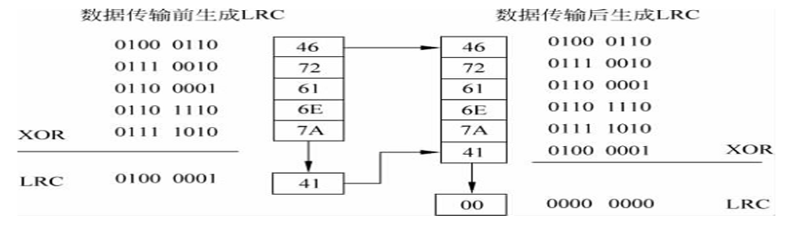
循环冗余码校验
CRC码
- 将k位信息写成M(x)阶多项式
- 设生成多项式G(x)的阶为 r
- 用模2除法计算
x^r*M(x)/G(x)，获得余数多项式 R(x) - 用模2减法求得传送多项式
T(x)= x^r*M(x)-R(x)则T(x)多项式系数序列的前 k位为信息位，后r位为校验位，传输位数为n=k+r 接收方解码方法：将T(x) 除以 G(x)，得到一个数，如果这个余数为0，则说明传输中无错误发生，否则说明传输有误
具体看 M(x)=1001,G(x)=1011
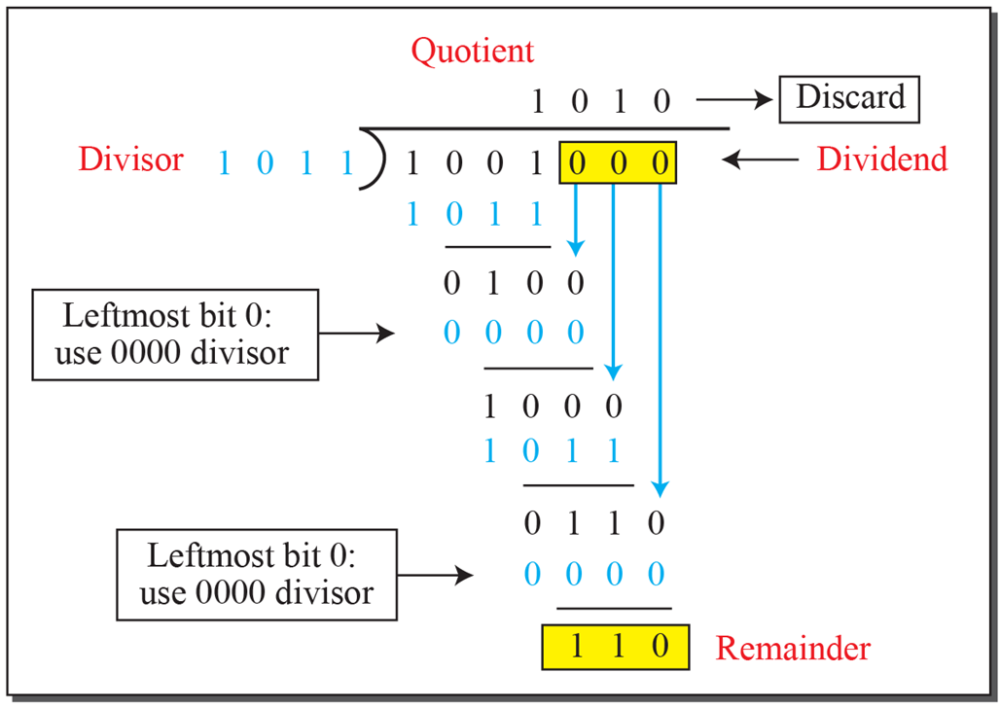
防碰撞算法
[!note]
在RFID系统应用中，读写器之间或标签之间的相互干扰，统称为碰撞。
- 读写器碰撞：相邻的读写器在其信号交叠区域内产生干扰，导致读写器的读写范围减少，甚至无法读取标签
- 标签碰撞：多个标签与同一个读写器同时通信时产生的干扰。
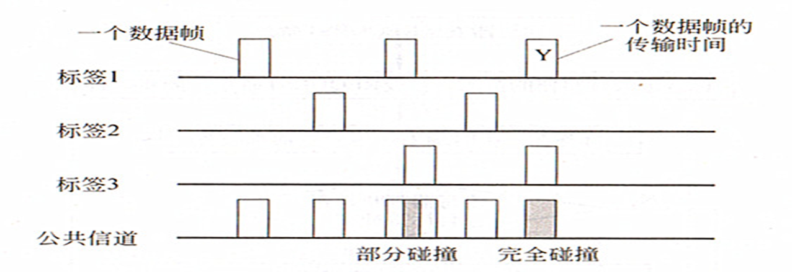
防碰撞检测
- 检测接收到的电信号参数的非正常变化
- 通过差错检测方法检查有无错码
- 利用某些编码的性能，检查是否出现非正常码来判断是否电生数据碰撞
多路存取法
[!tip]
不同通信形式一般有三种：
- “无线广播”式：1个读写器发出的数据被多个应答器接收
- 多路存取通信 ：多个应答器同时向同一个读写器发送数据，常见
- 多对多，少见
对于多路存取的四种解决办法
空分多路法（SDMA）：分离的空间范围内重新使用确定资源技术：
频分多路法（FDMA）: 使用多个频率
时分多路法（TDMA）/ 时分多址法
通路容量按时间分配给多个用户
读写器控制:轮询法：需标签清单，慢；二进制搜索算法
码分多路法（CDMA）：用户具有特征码
RFID系统一般采用时分多址法（ TDMA）来解决碰撞
防碰撞协议
防碰撞协议=防碰撞算法 + 命令
识别所有，及时处理，耗能少
概率性算法：减少碰撞的概率；纯ALOHA，时隙ALOHA，动态ALOHA，Q值算法
- 确定性算法：二进制树型搜索，基于序列号（UID)，基于随机数和时隙，查询树
概率性算法
纯ALOHA算法的基本思想
- 读写器检测接收到的信号并判断有无冲突；冲突则让标签停止发送等待随机一段时间后再重新发送以减少冲突的发生
- 仅仅适用于只读系统
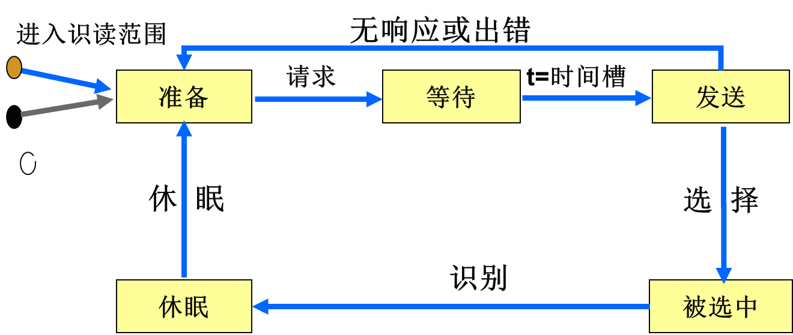
时隙ALOHA算法
- 在 ALOHA 算法的基础上对标签发送数据的时间加以限定
- 标签只能在每个时隙的初始时刻向读写器传输数据，必须有全局的时间同步
- 因此只处理碰撞的时隙
动态时隙ALOHA算法
动态调整时隙数量：通过对待识别的应答器数量进行预测，动态调整最优帧长
提供1或2个时隙给工作应答器使用，工作应答器将选择自己的传送时隙
在这1或2个时隙内有较多应答器发生了数据碰撞，阅读器就用下一个请求命令增加可使用的时隙数
Q值算法
针对应答器数量较多：该算法可实时自适应地调整帧长，提高效率
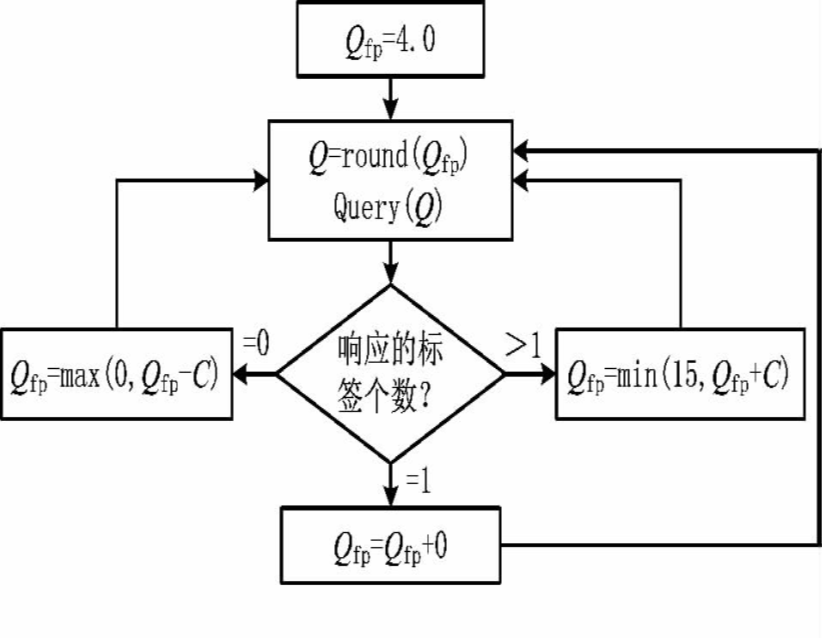
确定性算法
二进制树型搜索算法
按照其工作方式可分为：
- 基于序列号的方法
- 基于随机数和时隙的方法
- 查询树算法
基于序列号的方法
- 每个应答器有唯一的序列号UID
- 一般采用曼彻斯特编码检测碰撞位
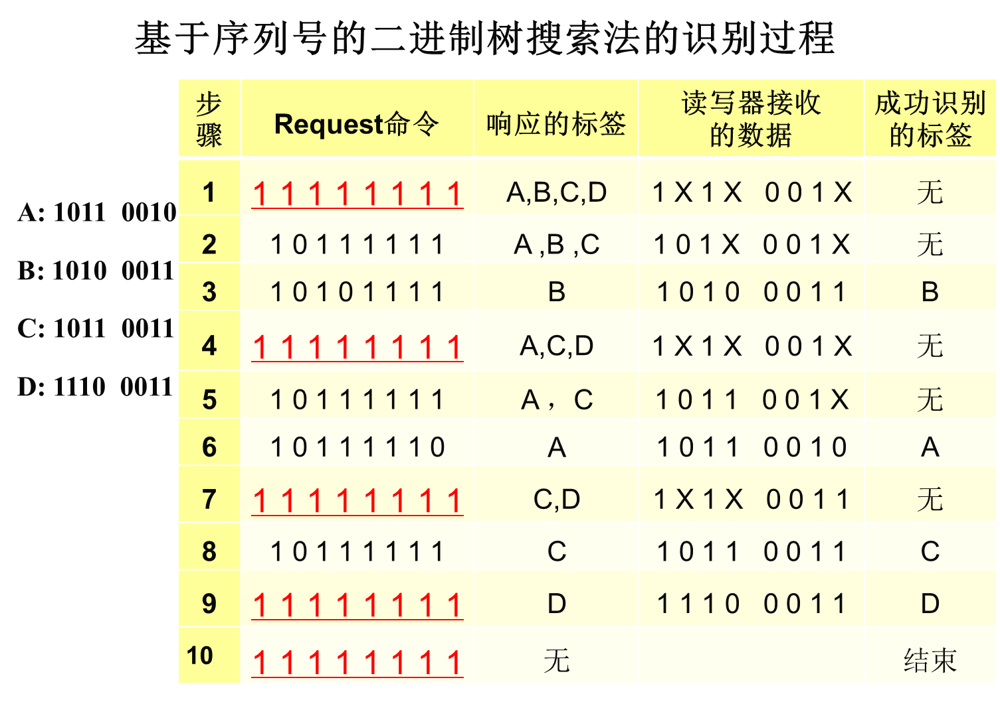
基于随机数和时隙的方法
采用递归的工作方式，遇到碰撞就进行分支，成为两个子集，或成为多个子集
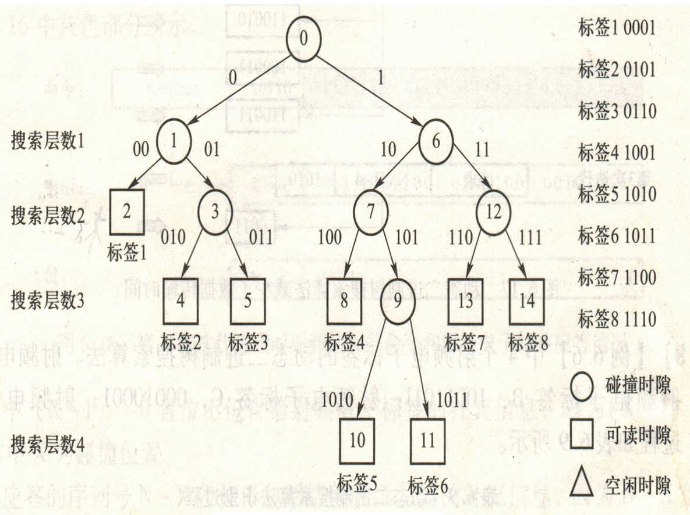
基于二叉树搜索，还有四分支法
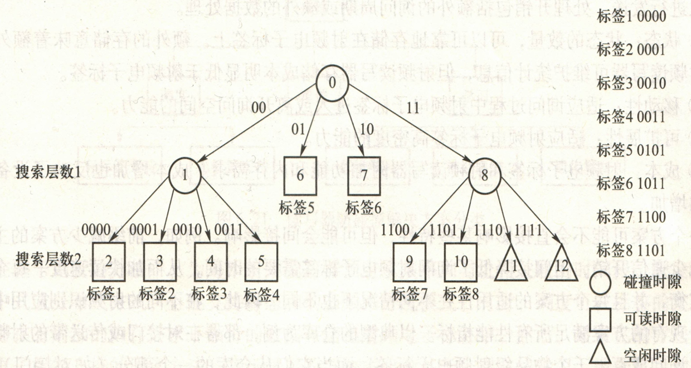
ISO/IEC 14443 中的防碰撞协议
规定：阅读器（PCD），标签（PICC）
当两个或两个以上的PICC同时进入射频区域时：
它们都接收到PCD发出的查询命令
PICC会同时发送响应，这样造成了PICC之间的信号冲突
PCD无法检测到正确的信号，即发生了碰撞。
ÌISO/IEC 14443-3标准中提供了两种不同的防碰撞协议
A型(TYPE A)：采用位检测防碰撞协议
B型(TYPE B)：通过一组命令来管理防碰撞过程
TYPE A 防碰撞协议
三种类型的帧：
短帧：由起始位S、7位数据位和通信结束位E构成
标准帧: 帧中每一个数据字节后有一个奇检验位P
面向比特的防碰撞帧：仅用于防碰撞循环，由7个字节(56位)组成的标准帧，分裂为两部分:
第1部分：PCD发送到PICC，最大长度为55位，最小长度为16位
第2部分：从PICC发送到PCD
在完整字节后分开并加以校验
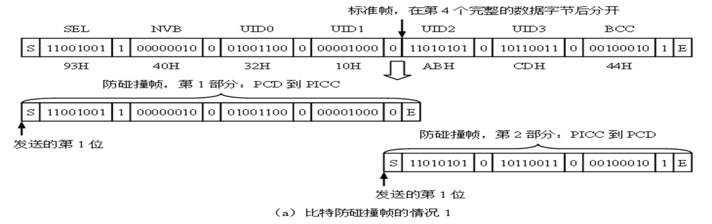
在完整字节后分开，不校验
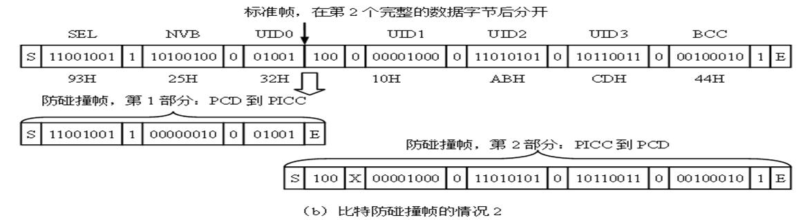
TYPEA的标签状态转换
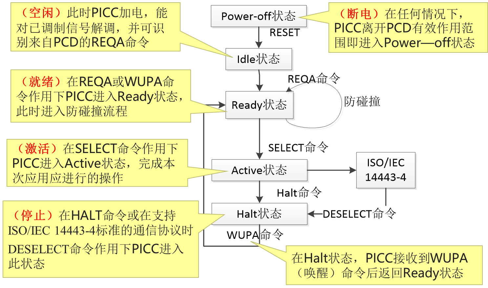
TYPE B的防碰撞协议
- TYPE B的防碰撞协议为通用的时隙ALOHA算法
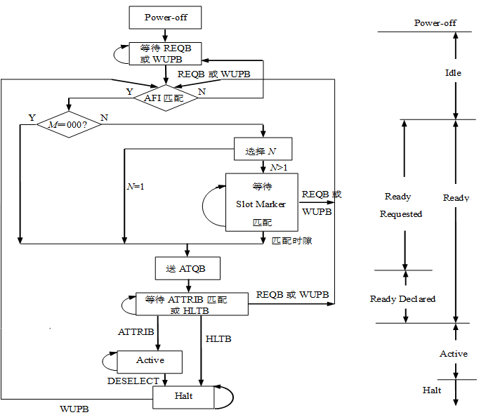